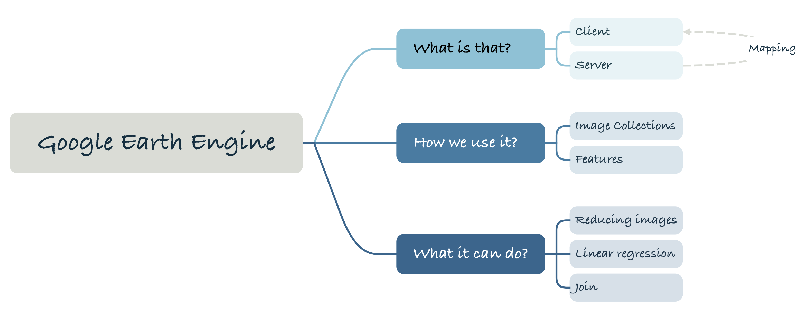
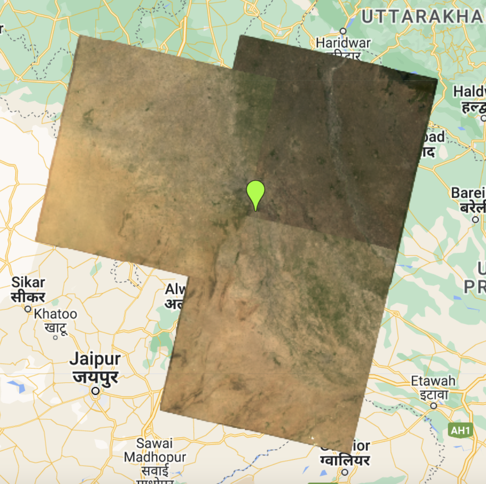

Week 06 Introduction to GEE
1. Summary

This week’s main focus is to have a brief introduction to GEE. Firstly the language used by GEE is JavaScript, a programming language that is a bit like Python and R. It’s not the same as R, but it’s not the same as R or Python. But unlike R or Python which run either on a rented server or on a local machine, GEE’s code runs partly on the browser and partly on the server side. It’s worth noting that variables on the server will start with ee. And to avoid wasting resources by loading the image multiple times during the loop, GEE can create a function and save it as an object (variable) and then apply it to everything on the server, similar to the map() function in R.
In GEE, a bunch of raster data is stored as an image collection, and the class provided a small example of using an image collection: selecting time intervals and regions to avoid error messages caused by large amounts of data. The following is a preliminary application of Practical: representing ROI on a map by selecting time intervals and geographic regions.  With only four or five lines of code, it seems to run at an unparalleled speed compared to R. Another commonly used Object is Features, where the ROI just defined a spatial area, but no attribute information. Therefore, Features can be interpreted as Geometry (points, lines, surfaces) with object information, such as name, type, population, etc.
GEE can also do data preprocessing and apply some algorithms that we do in R or Python. First of all, Image Reducing, in my understanding, is to turn multiple images into a single image through certain calculations, to avoid instability caused by clouds or seasonal changes. It can also be achieved by region or neighbourhood, the process is very similar to the convolutional neural network convolutional calculation, there is an irregularly shaped window sliding over the image, and some calculations are made on the pixels (such as the median). This can be implemented via the reduceRegions() or reduceNeighbourhood() functions.
Secondly, GEE can also merge data as we do in R (left join instead of merge). In GEE, there are various types of links, such as Inner Join which overlaps by matching, Spatial Join which connects according to spatial location and attributes, etc. In Practical, I was most shocked by the power of GEE in calculating the data in one go. In Practical, I was most shocked by GEE’s powerful computational capability, which can still run at a relatively fast speed even when calculating PCA with 21 layers at once. 
Thirdly, GEE can perform some linear regression. Usually it is the change of a certain variable over time, such as rainfall or temperature. Then the direction and degree of change is represented by the slope, which is visualised by different colours and shades. In addition, when I browsed the official GEE documentation, I found that the objects to apply linear regression can be ee.ImageCollection, ee.Image, ee.FeatureCollection, and ee.List objects.
2. Application
 Source: Google Earth Engine
Source: Google Earth Engine
The official website of Google Earth Engine provides a number of applications, including but not limited to population density distribution, forest change visualisation, land use, climate and weather monitoring applications. These applications are all open source, and you can find the corresponding data and code on the official website.
Google provides us with powerful cpu and gpu can batch parallel processing of computational data, but in the process of using it I found that GEE still has some limitations. Firstly, it is expensive to learn, although it provides a seemingly clear page for user interaction, it cannot run a cell individually like Jupyter notebook or R. When I test the changes brought by a certain line of code, I need to wait for the previous code to finish running, which greatly increases the cost of debugging the code. Although GEE can process large images quickly and efficiently based on pyramids at different scales, this is based on the premise that the network is stable. If it is not working properly or is limited in places with bad signal, this is a relatively low degree of freedom for GEE compared to locally running R or Python. The final thing is that when I checked the official documentation, there was no similar tutorial for multiple linear regression. And shockingly, Google Earth Engine can’t actually store and process InSAR data. According to Sentinel-1 algorithms, this is because InSAR data is incompatible with the concept of infrastructure tiling. This makes it impossible to analyse the 3D displacement information of the surface in GEE and we are forced to use less compatible software like SNAP.
3. Reflection
I am very excited to learn about GEE, despite the various problems in using it, GEE’s powerful computational power and responsiveness still allow me to process remote sensing data efficiently for free. Although it took me a while to get used to writing JavaScript and the GEE UI, I would like to say that the official documentation provided by GEE is a great reference. Both the Guide and the Data Catalog were particularly helpful in getting me started with GEE. In addition, my previous learning of R and Python helped me to get used to using JavaScript more quickly, as the underlying logic of programming is similar, with some syntactic differences.
This week I’ve just been following practical and trying to play around with GEE for the time being, everything is new to me, for example the named folders are not allowed to be renamed, and the plots seem to be in a fixed format and not restrained like ggplot or seaborn. I might be able to look into those awesome applications more in the future.